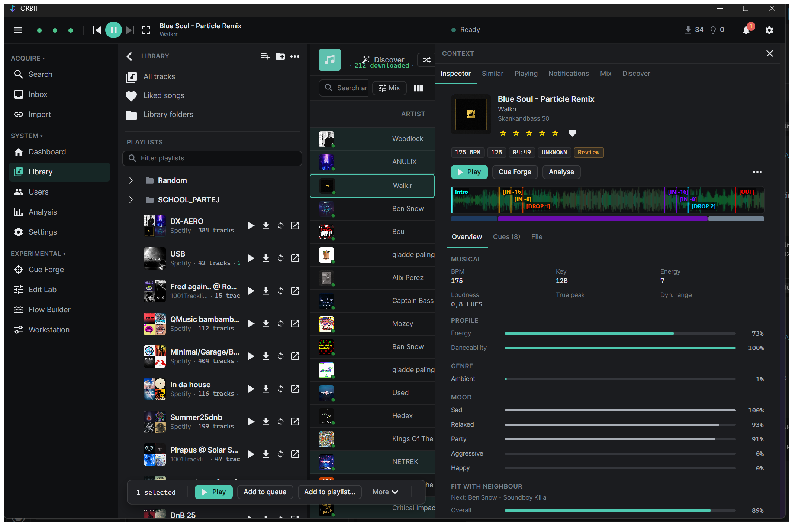
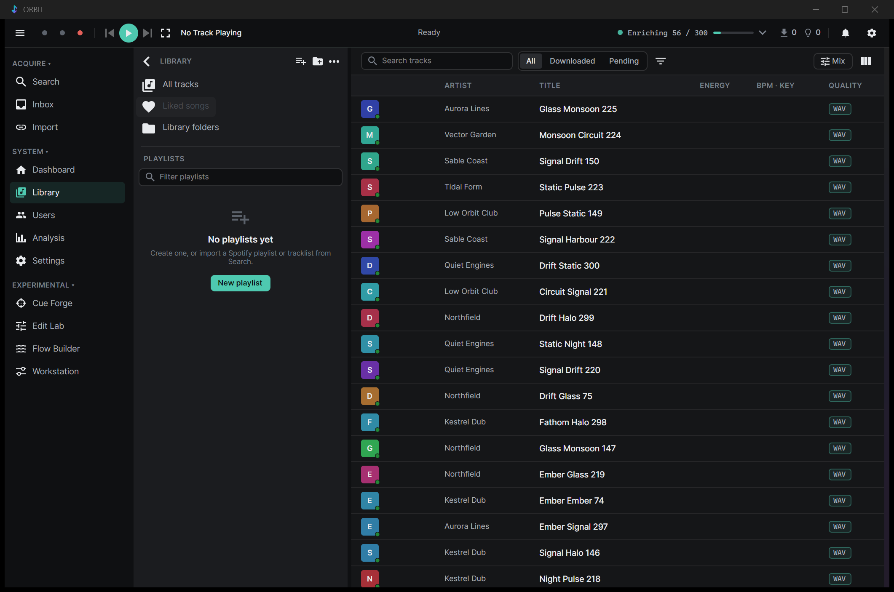
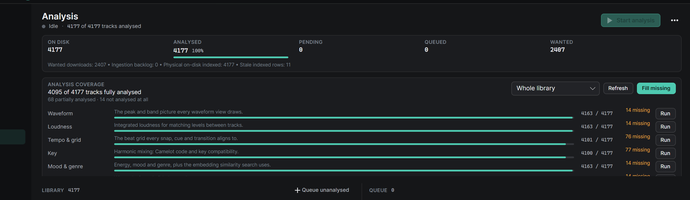
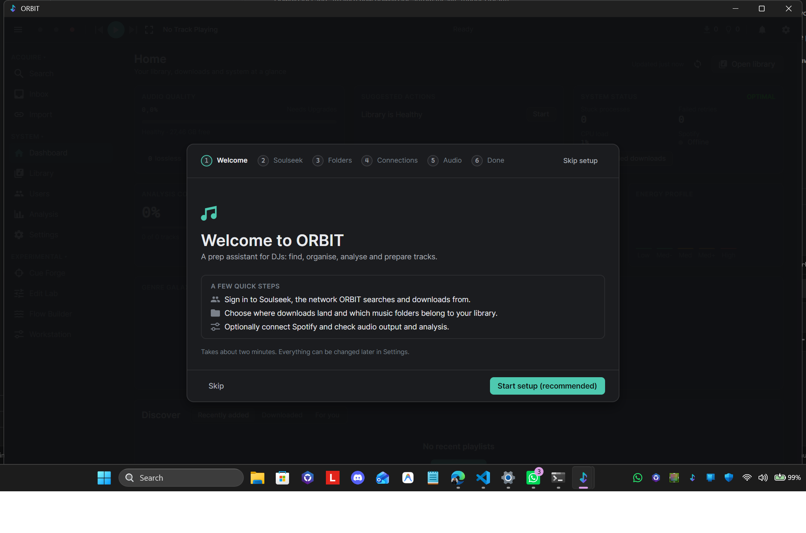
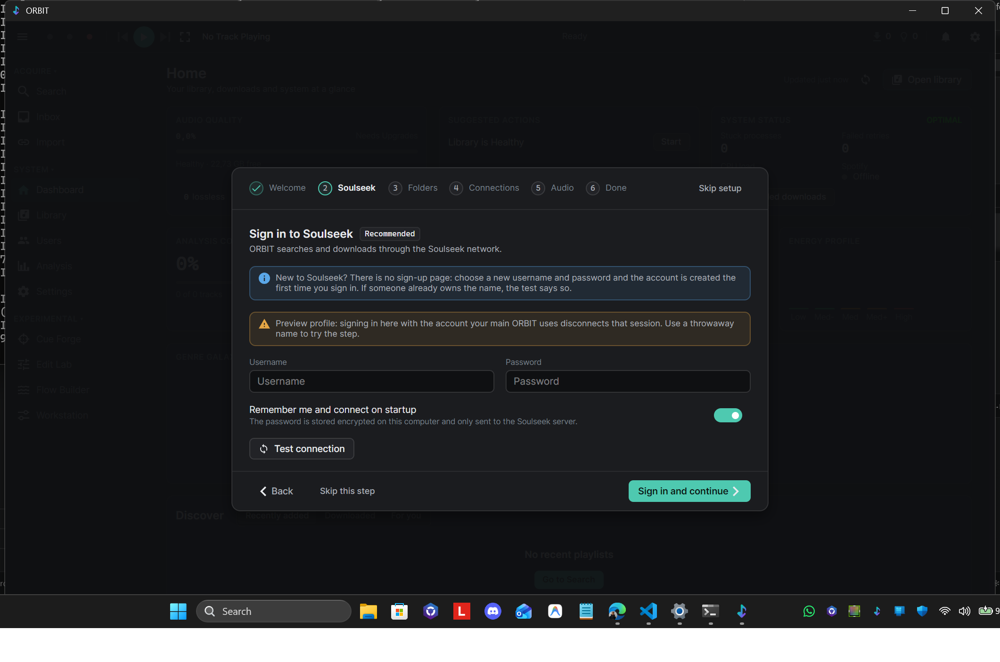
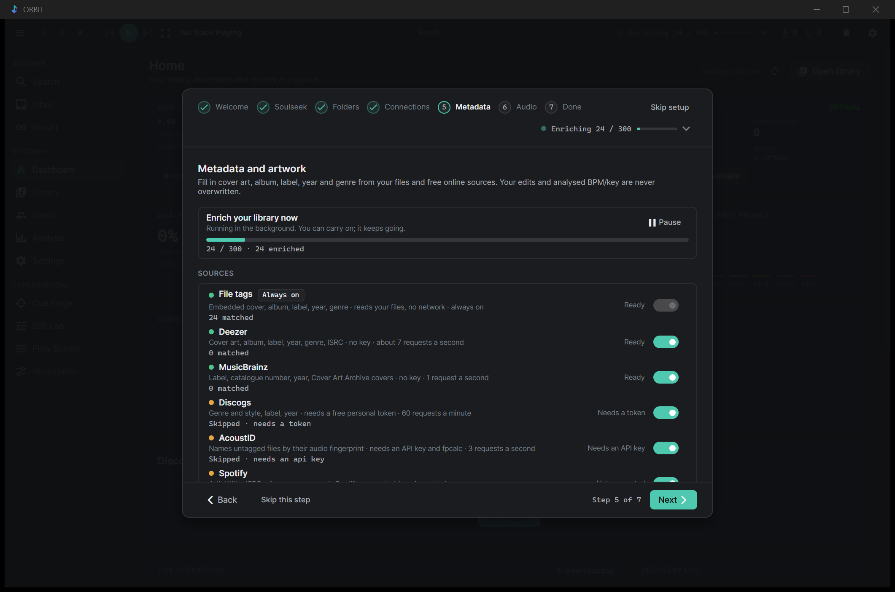

The Soulseek client for people who care about what they're actually downloading.
Prove every FLAC is genuine with FFT spectral forensics, import playlists from Spotify, YouTube, SoundCloud, or M3U/CSV, and prep BPM, Camelot key, cues, and stems before it hits Rekordbox.

Built for audio integrity and DJ workflow
No ads, no cloud accounts required, and no silent overwrites of your Rekordbox library.
Prove it's the real file
Automatic FFT spectral forensics detect fake-lossless upscales and brickwalled transcodes before they pollute your library, with clear quality tiers and quarantine.
DJ prep before Rekordbox
Local Essentia BPM, Camelot key, energy, loudness (LUFS), cue points, phrase structure, stem separation, and merge-mode Rekordbox XML + FAT32-safe USB folder layouts.
Search that explains itself
Multi-lane quality ranking, Album-mode grouping with one-click Queue album, and explicit per-result rejection reasons so you always know why a file was preferred or hidden.
A real, path-safe library
Unified path templates with live preview, Inbox staging, automatic path locking after Rekordbox export, undoable library reorganisation, and in-place quality upgrades with cue offset correction.
Real screenshots from ORBIT Pure
Native cross-platform Avalonia UI designed for high-density libraries and fast keyboard-driven curation.





ORBIT Pure vs other Soulseek clients
An honest look at where ORBIT Pure focuses compared to general-purpose Soulseek clients.
| Capability | ORBIT Pure | Nicotine+ | SoulseekQt |
|---|---|---|---|
| Fake-lossless FFT spectral forensics | Built-in | No | No |
| Album-mode search & per-result rejection reasons | Built-in | Flat list | Flat list |
| Playlist import (Spotify, YouTube, SoundCloud, M3U/CSV/JSON) | Built-in + preview | Plugins / manual | No |
| Local BPM, Camelot key, cues, LUFS & stems | Built-in | No | No |
| Rekordbox XML merge-mode & path-lock protection | Built-in | No | No |
| In-place MP3→FLAC upgrade with cue offset correction | Built-in + Trash | No | No |
| Open source & zero telemetry | GPL-3.0 | GPL-3.0 | Proprietary |
Common questions
What is ORBIT Pure?
ORBIT Pure is a free, open-source (GPL-3.0) desktop Soulseek client and DJ library preparation suite built with .NET 9 and Avalonia UI. It connects directly to the Soulseek peer-to-peer network and runs all audio analysis locally on your machine.
Is it free? Are there accounts, subscriptions, or telemetry?
100% free and open source under GPL-3.0. ORBIT has no backend servers, no analytics, and no telemetry. Your database, credentials (stored via OS keychain / DPAPI), and audio files never leave your machine.
Which platforms are supported?
Windows 10/11 (x64) is fully supported. Native macOS (Apple Silicon arm64 and Intel x64 DMGs) and Linux (x64 AppImage) builds are produced automatically on every release.
How does fake-lossless detection work?
After a download finishes, ORBIT inspects the file's frequency spectrum via FFT analysis to detect low-pass cutoffs typical of 128/192 kbps MP3s re-encoded as FLAC or WAV, flagging suspect files before they enter your DJ crates.
Will ORBIT break my Rekordbox cues or file paths?
No. Exported tracks are automatically path-locked so automatic re-filing and library reorganise runs skip them. Linked library folders are never moved automatically, and in-place quality upgrades measure encoder delay to shift cues and beatgrids within 1 ms.
Can I import playlists from Spotify, YouTube, Apple Music, or TIDAL?
Yes. ORBIT natively imports Spotify (OAuth + URL), YouTube & YouTube Music playlists, public SoundCloud playlists, pasted tracklists, and local .csv, .m3u, .m3u8, .txt, and .json files (including exports from TuneMyMusic, Soundiiz, and Rekordbox).